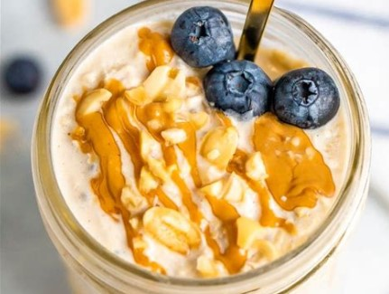
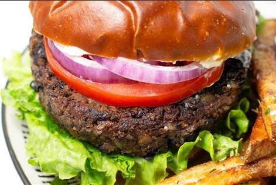
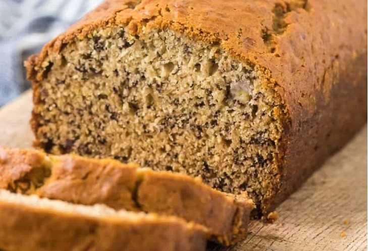

Go for a nature walk - there are plenty of local parks in the area:
Decrease your carbon footprint by following some of these tips!
Turn off your lights when you're not using them
Collect rainwater in a barrel and use it for non-drinking purposes like watering your garden.
Donate your clothes and thrift shop
Make an environmentally conscious meal
and maybe share it with a friend:
Breakfast: Overnight Oats with Peanut Butter

Ingredients:
1/2 cup Unsweetened Plain Almond Milk (or other dairy free milk)
3/4 tbsp Chia Seeds
2 tbsp Natural Salted Peanut Butter or Almond Butter
1 tbsp Maple Syrup
1/2 cup Rolled Oats
Any other toppings you'd like
Directions:
To a mason jar or small bowl with a lid, add almond milk, chia seeds, peanut butter, and maple
syrup (or other sweetener) and stir with a spoon to combine. The peanut butter doesn’t need to
be completely mixed with the almond milk (doing so leaves swirls of peanut butter to enjoy the
next day).
Add oats and stir a few more times. Then press down with a spoon to ensure all oats have been
moistened and are immersed in almond milk.
Cover securely with a lid or seal and set in the refrigerator overnight (or for at least 6
hours) to set/soak.
The next day, open and enjoy as is or garnish with desired toppings.
Overnight oats will keep in the refrigerator for 2-3 days, though best within the first 12-24
hours in our experience. Not freezer friendly.
Lunch/Dinner: Black Bean Burgers

Ingredients:
2 tbsp Olive Oil
2 cans Black Beans
1/2 small Red Onion, roughly chopped
3 cloves Garlic
1/2 cup Breadcrumbs
1 Egg
1 tsp Cumin
1 tsp chiles in adobo
1/2 tsp Garlic Powder
Kosher salt and fresh cracked pepper to taste
Serve with your favorite burger fixings!
Directions:
Heat 1 tablespoon olive oil in a large saute pan over medium heat. Add beans along with a moderate pinch of salt and pepper.
Cook, stirring frequently for 5-6 minutes.
Transfer half the beans to a large bowl and set aside.
Transfer the other half of the beans to a food processor along with red onion, garlic, breadcrumbs, egg, cumin, chiles in adobo, garlic powder and a large pinch of salt and pepper.
Pulse until well minced and thoroughly combined.
Add bean mixture to the whole beans in the large bowl and stir to combine.
Refrigerate burger mixture for 30 minutes (or up to a week in the fridge).
Heat remaining tablespoon olive oil in a large saute pan over medium heat.
Form the black bean mixture into 6 equal size burger patties.
Saute patties in batches cooking each side of the burger for 4-5 minutes or until a dark golden brown crust forms. Add more olive oil as needed as you continue to saute the burgers.
Serve with your favorite burger condiments and enjoy!
Dessert: Banana Bread

Ingredients:
4 Ripe Bananas (if they're frozen, let them thaw)
1/3 cup of Melted Butter
1 Egg
3/4 cup of Sugar
1 tsp Vanilla
1 tsp Baking Soda
1/4 tsp Salt
1 1/2 cups Flour
Directions:
Preheat oven to 350 degrees F and grease a loaf pan.
In one medium sized mixing bowl: mash the bananas, add applesauce and vanilla extract, then mix again.
To this mixture, add the flour, sugar, baking soda, baking powder and salt. Mix well, but don’t overmix, just until the flour is combined. (Batter will be a little thick and there will be a few lumps, so no worries. If the mixture seems a little too thick, add a bit more milk, especially if using heavier flours such as whole wheat or spelt.)
Pour batter into the loaf pan and bake for about 50 minutes.
Insert toothpick in bread to test if it’s done. If it comes out clean it means your bread is ready!
Remove from oven and let cool for 10 minutes before slicing.